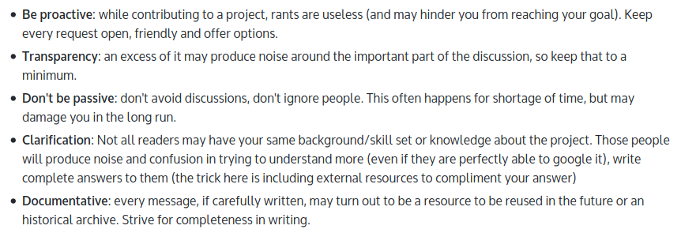
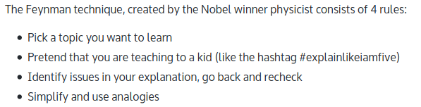
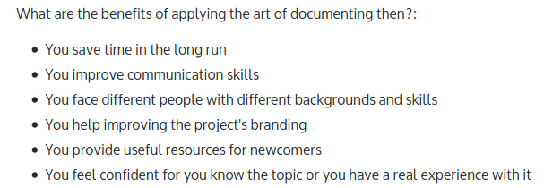
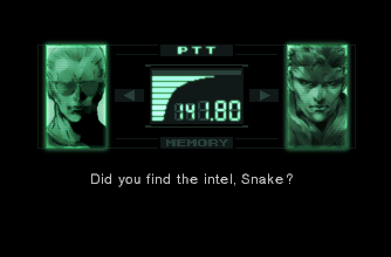
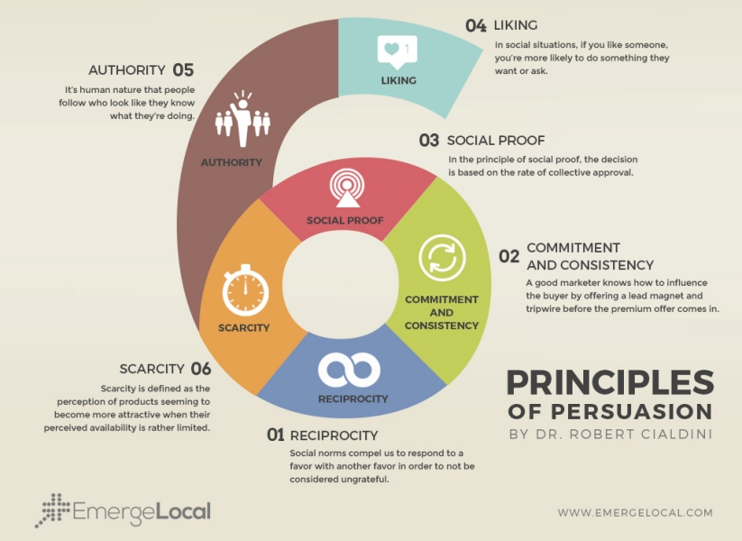
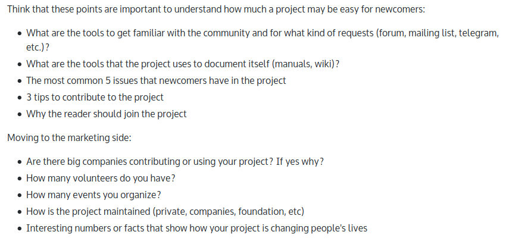

warning
This talks include a lot of Video games references!
Daniele Scasciafratte
- Co Founder/CTO Codeat
- Open Source Addicted
- Mozilla Italia volunteer since 2013
- Mozilla Reps since 2015
- Mozilla TechSpeaker since 2016
- WordPress Core Contributor since 2015
- On Github since 2010, first public pr on 2012
- Bugzilla account created: Mozilla 2012, KDE 2010
- First Debian ticket 2013
Daniele Scasciafratte
- WordPress meetup co-organizer Roma/Terni 2015/2020
- Italian national confs: Confsl 2016, DUCC-IT 2015/2017, Merge-IT 2018
- First Fosdem 2015, as speaker 2017
- First Italian Linux Day 2013
- First AMA on /r/ItalyInformatica in 2017
- Founder LUG Rieti 2018
- Member: LibreItalia, Wikimedia Italia, FSFE, ILS
- First community webinar in 2012
- First english book in 2019
1. Study your OSS experience
- Skills, ex:
- Improve English
- Public Speaking
- Marketing
- Event organization
- Group working
- Coaching
- Planning
- Community Management
1. Study your OSS experience
- Knowledge, ex:
- New technologies
- New approaches to similar tasks
- Profile the community members
- How to do reports
- Important Goals or Achievements, ex:
- Gratification
- Recognition by other people
2. Remember why you contribute to OSS?
- "I like the philosophy"
- "I had free time"
- "I needed something"
- "There was a problem..."
- "I chosen to give 20 minutes at day..."
- "I want to learn..."
(Needs + Problem)/Time = Learning
3. Communication

From Chapther 3
3. Communication
- Ticket/Bug/Issue
- Email
- Chat
- Forum
- Public Speaking
3. Communication
Document

From Chapther 3
3. Communication
Why Document

From Chapther 3
3. Communication

“I do love email. Wherever possible I try to communicate asynchronously. I'm really good at email.” Elon Musk
4. Which project contribute to
Contributing to a project without having a long term or personal goal is going to stop you from discovering the project itself or from feeling a part of it.
I see many people contributing to enrich their resumés, as legitimate and necessary as it is, again, this isn't going to help you feel a part of the project [...] or learn how works.
From Chapther 4
4. Which project contribute to
The experience makes the difference, if it is also followed by meritocracy and satisfaction (normal things in open source) this may help us reach a new point of view.
From Chapther 4
Recruiting new volunteers

Marketing analysis

Followed by an interview to volunteers
From Chapther 4
5. First/Second levels activities
- First:
- Reviewing (direct)
- Localization (direct)
- Support (direct/impact)
- Testing (direct)
- Promotion/Evangelism (direct/impact)
- Advocacy (direct/impact)
- Event (impact)
- Second:
- Documentation (direct)
- Community management (direct)
- Development (direct/impact)